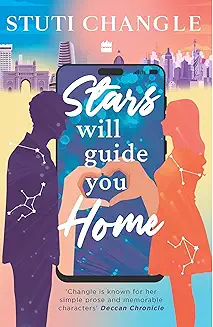

Before the Coffee Gets Cold" by Toshikazu Kawaguchi is a heartwarming and poignant Japanese novel that
explores the themes of time, regret, love, and human connection. It's the first in a popular series that
originated as an award-winning play.

Stars Will Guide You Home
by Stuti Changle
This book is a contemporary romance that explores themes of second chances, emotional healing, and finding
love in the digital age. It centers around two characters, Kiana and Nirvaan, who were separated by family
expectations as teenagers. A decade later, they are matched by an AI-powered dating app called AILENA. The
story delves into whether their love can overcome past wounds and the app's pronouncements.
The Book of Doors
by Gareth Brown
The story follows Cassie Andrews, a bookseller in New York City, whose ordinary life takes a magical turn
when a favorite customer leaves her a mysterious old book. This book, "The Book of Doors," has the
extraordinary power to allow its possessor to open any door to any place they can imagine. However, Cassie
soon discovers that this powerful book is not the only magical one in existence, and there are dangerous
individuals who will stop at nothing to acquire it. She and her best friend, Izzy, find themselves in a
world of magic, danger, and a secret library of other powerful books, with a mysterious man named Drummond
Fox who might be their only hope against a nameless evil.